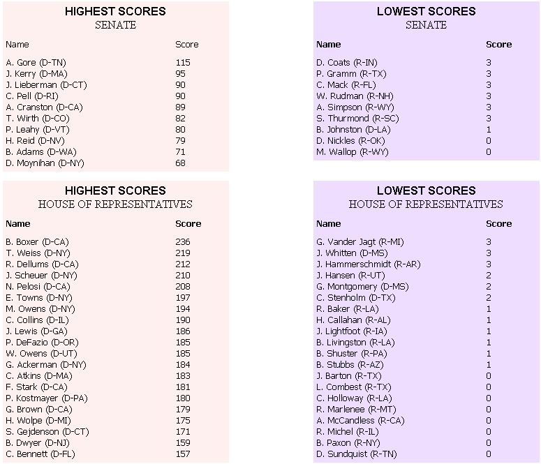

|
Al Gore: Senator Gore (D-TN) ranks highest among U.S. Senators in environmental activism. |
Malcolm Wallop: Senator Wallop (R-WY) has the unfortunate record of not supporting or sponsoring a single environmental bill during the 101 and 102nd congresses. |
 |